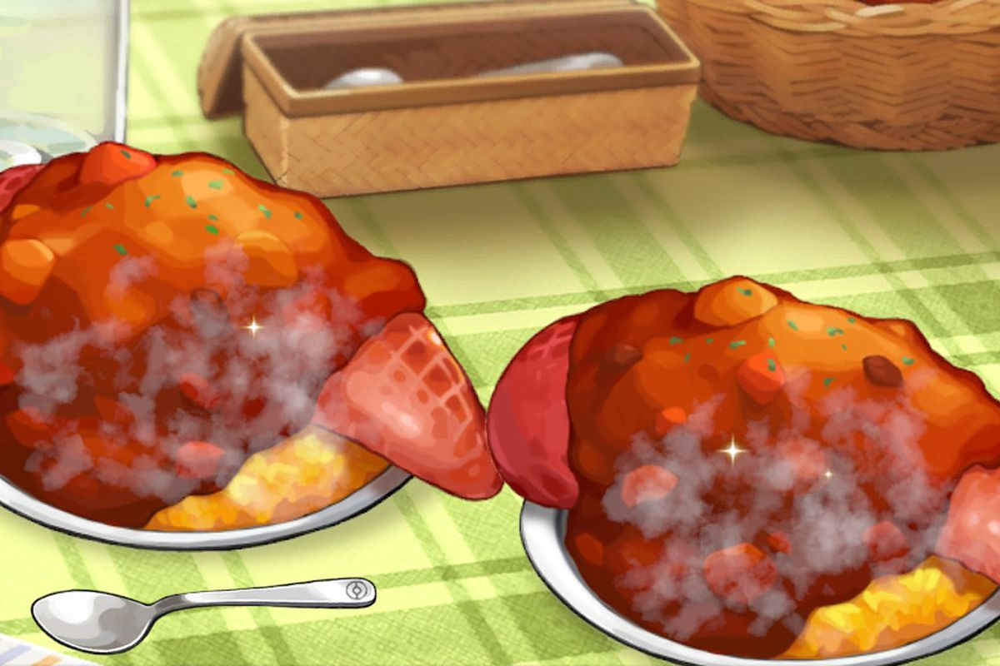

Slowpoke Tail

Description
Honey glazed slowpoke tail served with punchy blueberry and walnut mix
Ingredients
- Slowpoke Tail
- Wild Honey
- Maple Syrup
- Salt
- Blueberries
- Walnuts
Steps
- Put Slowpoke tail on a paper plate, then drizzle honey and maple syrup on it. Sprinkle salt onto it. (Remember, Slowpoke like the sea)
- Heat the plate in the microwave for one minute. There will likely be a few pops if you have bacon. What this does is it better infuses the meat with the two, and makes the two blend into a very sap-like blend. (Which is what Slowpoke tails are known for having)
- Drizzle with more honey
- Serve with crushed blueberries and walnuts